Alison Booth
Daffan, Katie. Woman in History. New York and Washington, DC: Neale, 1908.
TOC: Cleopatra; Vashti; Queen Esther; The Queen of Sheba; Aspasia; Cornelia, Mother of the Gracchi; Mary the Mother of Jesus; Hypatia; Heloise; Eleanor of Aquitaine; Matilda of Flanders; Beatrice Portinari; Joan of Arc, "Maid of Orleans"; Elizabeth of England; Mary Stuart, Queen of Scotland; Nelle Gwynne; Madame de Maintenon; Madame Pompadour and Madame du Barry; Marie Antoinette; Madame Roland; Charlotte Corday; Madame de Stael; Madame Recamier; Josephine, Empress of the French; Maria Theresa; Catherine II--Alexieona; Queen Victoria; Eugenie.
Search OCLC WorldCat for this title.
Search Google Books for this title.
Da Libra [Daniel L. Brain]. Women Types of To-Day. The Venus, the Juno, the Minerva. London: Stock, 1907.
Bodleian
On blue cloth front cover, title appears in red, subtitle types in silver script, and in lower right in red: "A Study by Da Libra," the name as if in signature. On the title page the title and subtitle continue: "Or/ Modern Casts from Ancient Moulds" in small caps. "A Study, Dedicated to Both Sexes," in gothic lettering, "By/ Da Libra." in pencil annotated "pseud/ Colonel Brain." The introduction quickly establishes the strange blend of the text and its effervescent style. "In this work there might be found sign-posts or aids in the scrutation of types" (vi) in the effort to "classify women, as a naturalist does" (iii-vi). The next section, "Cover Device," explains the cover's design: the types appear on the cover in calligraphy characteristic of their respective types ("enlarged from those written by models of the respective types" (vii). The types appear in silver to symbolize the night and the moon, and the color blue is an emblem of "the Firmament" (viii). Few named women appear in the book, though passages will catalogue eminent women, for instance Semiramis, Zenobia, Sappho, Cleopatra, on up to Mrs. Somerville, on pp. 10-11. Under the header "TYPES--CAREERS OF LIFE [CHAP. III." and subheading "IN SOCIETY": "In middle age the Venus and Juno types approach each other as to form and disposition, though their leading characteristics will be preserved" (98). Epigraphs and excerpts from famous writers such as Ovid interrupt the prose, e.g. pp. 232-3. An exception appears in discussing the famous women who "ruled Kings" in France; ch. vii, pp. 300-13, includes various named women. See Cole.
TOC: Chapter I: Types Considered: Beauty generally - Past and present types - Have women types of old been excelled? - Types in novels - The study of types - Non-comprehension of types - Why no men types ; Chapter II: The Prototypes in the Classics: The classics shelved - Siege of Troy - Venus - Juno - Minerva - The 'Iliad' - The 'Aeneid' - The Argonauts - The 'Odyssey' - From various poems" ; Chapter III: Types - Careers of Life: First to finish - School days - Coming out - Middle age - In society, in the home - A glance at the unions - Affinities - Spinsterhood - Conclusion ; Chapter IV: Types - Manners and Feelings: Shopping - Abroad - Fitness - Facing danger - Religion - The Venus - The Juno - The Minerva - The Refusal - Home occupations - Conversation - Altering influences: Mental, Physical ; Chapter V: Types 'En Abandon': The playground - Men met - The loud man - The manly man - The ladies' man - The old beau - The atypic and tact ; Chapter VI: 'Abandon' Caged: The sea voyage - Climate and scenery - Pairing off and courting - The Venus - The Juno - The Minerva - Conclusion - The atypic - Expression - Hints ; Chapter VII: Types in Communities: Continental women generally - The Frenchwoman - The political state - The domestic state - Reserve - Grades of society - Jumping the fences ; Chapter VIII: Types - 'Adrift' and 'Astray': Types 'adrift' - Self-dissolution - 'Lucrece' - 'Panthea' - 'Haidée'- Paulina - Types 'astray' - Platform ethics - Ignorance of types .
Search OCLC WorldCat for this title.
Search Google Books for this title.
Daniel, Sadie Iola. Women Builders. Washington, DC: Associated Publishers, 1931; 1970.
TOC: Lucy Craft Laney; Maggie Lena Walker; Julie Porter Barrett; Mary McLeod Bethune; Nannie Helen Burroughs; Charlotte Hawkins Brown; Jane Edna Hunter.
Sketches of seven African American women; part of the Black Biographical Dictionary series of over 200 titles. 1970 ed. enlarged by Charles H Wesley and Thelma D Perry. 1970 TOC below.
TOC: Lucy Craft Laney; Maggie Lena Walker; Julie Porter Barrett; Mary McLeod Bethune; Nannie Helen Burroughs; Charlotte Hawkins Brown; Jane Edna Hunter; Harriet Ross Tubman; Fannie Muriel Jackson Coppin; Maria Louise Baldwin; Ida B. Wells Barnett; Hallie Quinn Brown.
Search OCLC WorldCat for this title.
Search Google Books for this title.
Danker, Albert. Heroines of Olden Time. New York: [Chapple & Tozer], 1875.
TOC: Eve, Our First Mother; Sarah, the Dutiful Wife; Miriam, or Social Sins; Ruth, the Type of Industry; Abigail, the Churl's Wife; Elizabeth, or a Model Household.
A biblical group
Search OCLC WorldCat for this title.
Search Google Books for this title.
Dark, Sidney. Twelve Great Ladies. London: Hodder & Stoughton, 1928; 1929.
TOC: Catherine de Medici; Mary of England; Mary, Queen of Scots; Henrietta Maria; Louise de la Vallière; Queen Christina of Sweden; Sophia, Electress of Hanover; Maria Theresa; Catherine the Great; Marie Antoinette; Josephine de Beauharnais; Caroline of Brunswick.
Search OCLC WorldCat for this title.
Search Google Books for this title.
Dark, Sidney. Twelve More Ladies; Good, Bad and Indifferent. London: Hodder & Stoughton, 1932.
TOC: Cleopatra; Philippa of Hainault; St. Joan of Arc; St. Teresa; Queen Elizabeth; Mme de Maintenon; Nell Gwynne; Madame de Pompadour; Mme Mère; Mme de Staël; Florence Nightingale; Catherine Booth.
These collections accompanied by one entitled Twelve Bad Men. Compare title of Furniss, 1923.
Search OCLC WorldCat for this title.
Search Google Books for this title.
Darton, John Maw. Famous Girls Who Have Become Illustrious Women: Forming Models for Imitation for the Young Women of England. 4th ed. London: Virtue, [1860-69?]. 1864 Title variant: Famous Girls Who Have Become Illustrious Women of Our Time: Models for Imitation by the Young Women of England, 6th ed. London: Darton & Co. [187?] 9th ed. London: J. Kempster [19??] 17th & 18th eds. London: Sonnenschein & Allen, 1880; 1884.
TOC: Margaret Roper; Fanny Burney; Laura Bridgman; Felicia Hemans; Harriet Martineau; Harriet Beecher Stowe; Elizabeth Le Brun; Mme de Guyon; Mme de Stael; Victoria; Princess Charlotte; Frederika Bremer; Margaret, Duchess of Newcastle; Miss Marsh; Caroline Chisholm; Miss Lydia Child; Dowager Duchess of Sutherland; Jenny Lind; Princess of Wales; Princess Louisa. .
Flint, Woman Reader : companion to Brave Boys Who Have Become Illustrious Men of Our Time (1880). Twenty subjects, primarily from nineteenth-century Europe.


Search OCLC WorldCat for this title.
Search Google Books for this title.
Darton, John Maw. The Heroism of Christian Women of Our Own Time. London: np, 1880; New York: Carter, 1882; Allison, 1893. Title variant: Heroism of Christian Women of Our Own Time, what they have done & are doing, embracing their early training and inner life. London: Swan, [1880].
TOC: H.R.H. Princess Louise; Agnes Elizabeth Jones; Lady Hope; Mary Carpenter; Mrs. Lucas; Mrs. Daniell; Miss Weston; Mrs. Ranyard; Mrs. Reed; Catherine Tait; Frances Ridley Havergal; Sister Dora; Mrs. Fisher; Mrs. Wakefield; Christine R. Alsop; Anne Mackenzie; Charlotte Elizabeth Tonna.
Search OCLC WorldCat for this title.
Search Google Books for this title.
221A D'Auvergne, Edmund Basil Francis. Adventuresses and Adventurous Ladies. New York: J. H. Sears; London: Hutchinson, 1927; 1928.
"With sixteen full-page illustrations" in small caps on titlepage. University of Miami copy bookplate "Ex Libris Henry Viehe." "By the Same Author: Some Left-Handed Marriages, A Queen at Bay, Lola Montez, The Bride of Two Kings, Etc., Etc." listed in small caps. Youthful portrait of Lola Montez "(After Joseph Stieler)," frontispiece. Preface by D'Auvergne attests to his original research to present truthful accounts of "women whose stories...[of] various ages, nations, and orders of society" present "a doubtful moral, but...make a good tale" (5-6). The very familiar story of Lady Hamilton (Admiral Nelson's mistress) may be welcomed as a favorite "in a gallery mostly given up to strangers" (6)—possibly indicating that Lola Montez was being revived in the early twentieth century. The "Preliminary Discourse" concludes with the opinion that these women were resourceful within their time's subordination of women; "You can decide for yourself which were the adventuresses and which the adventurous ladies" (14). Portraits of male rulers mix with multiple images of some of the women; three of Lola Montez.
TOC: Catalina de Erauso; Mary Carleton; Elizabeth Chudleigh; Princess Tarakanova [Aly Emmetté]; Théroigne de Méricourt; Emma, Lady Hamilton; Lola Montez; Thérèse Humbert.
Chapter titles: Preface; A Preliminary Discourse on Adventuresses; The Nun Ensign (Catalina de Erauso); "The German Princess" (Mary Carleton); The Countess-Duchess (Elizabeth Chudleigh; "Elizabeth the Second"; The Fire-Hearted Demoiselle; "The Dear Emma" (Emma, Lady Hamilton); "The Spanish Dancer" (Lola Montez; La Grande Therese (Thérèse Humbert).
Search OCLC WorldCat for this title.
Search Google Books for this title.
Daughters of the American Revolution. Chapter Sketches: Patriots' Daughters. Edited by Mary Philotheta Root. New Haven: Connecticut Chapter, DAR, 1904.
Each chapter contains biographies of a DAR chapter with subsections devoted to each daughter.
-
 Mrs. Sara T. Kinney
Mrs. Sara T. Kinney -
Emily Louise Gerry
-
 The Gerry House
The Gerry House -
Castle.jpg) Phebe (Kimberly) Castle
Phebe (Kimberly) Castle -
Belden.jpg) Rachel Selina (Folwer) Belden
Rachel Selina (Folwer) Belden -
Rachel (Hopkins) Fowler
-
Mahala Terry
-
 Anna Maria Benton
Anna Maria Benton -
 Martha Babcock Noyes
Martha Babcock Noyes -
 Sarah Maria Brayton
Sarah Maria Brayton -
Lucy Stanton Wheeler
-
 Mary Kendrick Williams
Mary Kendrick Williams -
Eunice Palmer Davis
-
Phoebe Palmer Ray
-
Home of Phoebe (Palmer) Ray
-
 The Home of Solomon Loring, Lebanon
The Home of Solomon Loring, Lebanon -
Minverva (Blake) Howland
-
Emily (Savage) Roys
-
Nancy Lord (Wheeler) Stanton
-
Mary Ann Wheeler
-
Holden.jpg) Lydia Wheeler (Moore) Holden
Lydia Wheeler (Moore) Holden -
Quill.jpg) Emma (Dutton) Quill
Emma (Dutton) Quill -
Higgins.jpg) Jeanette (Carter) Higgins
Jeanette (Carter) Higgins -
Crissey.jpg) Harriet (Reid) Crissey
Harriet (Reid) Crissey -
 Mary J. Robbins
Mary J. Robbins -
Mary Augusta (Steele) Cleveland
-
Hubbell.jpg) Caroline (Pinto) Hubbell
Caroline (Pinto) Hubbell -
 Abby Holt
Abby Holt -
.jpg) Juliette Betts
Juliette Betts -
Raymond.jpg) Charlotte (Keeler) Raymond
Charlotte (Keeler) Raymond -
Mary (Hollister) Pitkin
-
Couch.jpg) Lydia (Alexander Couch)
Lydia (Alexander Couch) -
Dunham.jpg) Sylvia (Langdon) Dunham
Sylvia (Langdon) Dunham -
Mary Spooner
-
Hall.jpg) Mary (Todd) Hall
Mary (Todd) Hall -
Betsey (Parker) Jeralds
-
Dart.jpg) Mary Ann (Lucas) Dart
Mary Ann (Lucas) Dart -
Butler.jpg) Almira (Hunting) Butler
Almira (Hunting) Butler -
 Caroline Foster
Caroline Foster -
Statira (Hodge) Beardslee
-
Calder.jpg) Julia (Eddy) Calder
Julia (Eddy) Calder -
 Anna Parkhurt (Knowlton) Bird
Anna Parkhurt (Knowlton) Bird -
Sarah (Candee) Fairchild
-
Lum.jpg) Augusta (Wooster) Lum
Augusta (Wooster) Lum -
Pierce.jpg) Anna Hale (Burnap) Pierce
Anna Hale (Burnap) Pierce -
Bradley.jpg) Abigail Ann (Atwater) Bradley
Abigail Ann (Atwater) Bradley -
Phoebe (Rockwell) Gainford
-
HobartandGreat-Grandchild.jpg) Mabel (Cooley) Hobart and Great-grandchild
Mabel (Cooley) Hobart and Great-grandchild -
Delia Clark (Murdock) Dowd
-
Abigail (Foote) Loomis
-
Eunice (Griffith) Clark
-
Mary Jane Deming
Search OCLC WorldCat for this title.
Search Google Books for this title.
Daughters of the American Revolution. Chapter Sketches: Patron Saints. Edited by Mary Philotheta Root. New Haven: Connecticut Chapter, DAR, 1901.
-
 Mrs. Sara T. Kinney
Mrs. Sara T. Kinney -
 The Girl, Faith Trumbull
The Girl, Faith Trumbull -
 Entrance to the Trumbull House
Entrance to the Trumbull House -
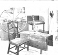Interior of the War Office
-
 Madame Faith Trumbull
Madame Faith Trumbull -
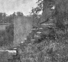The Trumbull Tombat Lebanon
-
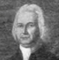Colonel George Wyllys
-
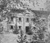The Wyllys Mansion and the Charter Oak
-
 The Ancient Burial Ground, Hartford
The Ancient Burial Ground, Hartford -
 Charlotte Elderkin
Charlotte Elderkin -
 Eunice Dennie Burr
Eunice Dennie Burr -
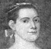Lucretia Shaw
-
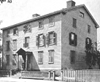General Wooster House
-
 Corner Cupboard
Corner Cupboard -
 Homeo of Elizabeth Porter Putnam
Homeo of Elizabeth Porter Putnam -
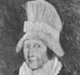Mary Silliman
-
 The Home of Mrs. Mary Silliman
The Home of Mrs. Mary Silliman -
 Sarah Fuller Hull
Sarah Fuller Hull -
 Jane Smith Phelps
Jane Smith Phelps -
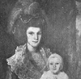Mary Floyd Tallmadge and Children
Search OCLC WorldCat for this title.
Search Google Books for this title.
Daughters of the American Revolution. Outstanding Iowa Women. [Iowa: DAR, 1920-30].
TOC: Phebe Allen; Sophia Dolson Andrews; Mrs. Valeria M. Ankeny; Hannah Henrietta Armstrong; Lydia Bailey; Mrs. Stella Margaret Barnes; Miss Mary Brewer; Sophia Darr Bryant (Mrs. John Hall); Mrs. Esther Burch (Mrs. Rollin); Charlotte Kichner Butler (Dr. Morean S.); Mrs. Jane Chilcote; Dr. Margaret Vaupel Clark (Dr. Hardy); Mrs. Orson Clark (Lucy Emma Sylvester); Mrs. Carlton Corbett (Rossabella V. Commigngs; Mrs. Julia S. Cowles (Potter); Mrs. Loren Eastman; Mrs. A. J. Edwards (Amanda Fisk Eall); Lydia Bailey; Mrs. Stella Margaret Barnes; Mrs. E. J. Fenton (Mariette McNett); Mrs. J. Ellen Foster; Mrs. Laura R. Gibbon (Mrs. William H.); Annie Wallingford Blair Harrison; Mrs. Walter I. Hayes; Mary E. Haynes (Lothrop); Philena Everett Johnson (Mrs. Eli); Mrs. John H. Leavitt (Caroline Clark); Mrs Corilla Copeland Lewis (Mrs. Evan); Mrs. Lois Lewis (Mrs. Washington); C. E. Leonard (Father of Lillian Russell); Maria Bostwick Blair McCarty; Mrs. Anna Hetherington McDermid (Mrs. Peter); Mrs. Maggie Hckey McNally (Mrs. Patrick); Mrs. Mary Mitchell Mudgett (Mrs. P. P); Miss Mary Patrick; Lou B. Prentiss; Hannah Elizabeth Putnam; Lillian Russell (Leonard); Nancy Severs (Mrs. A. B. Carter); Mrs. E. C. Stevenson (Sarah Manly); Dr. Jeanette Throckmorton; Mrs. Francis Edmund Whitley; Mrs. Annie Whittenmeyer; Mrs. W. E. Young.
Search OCLC WorldCat for this title.
Search Google Books for this title.
Daughters of the American Revolution. The Pioneer Women of Wyoming: An Address Before the Wyoming Valley Chapter, D.A.R. By Frederick C. Johnson. Wilkes-Barre, PA, n.p., 1901.
Search OCLC WorldCat for this title.
Search Google Books for this title.
Daughters of the American Revolution. Some North Carolina Heroines of the Revolution. By Richard Dillard. [Raleigh]: North Carolina DAR, 1909.
A nine page insert in The North Carolina Booklet that details the heroic acts of three North Carolinian women during the American Revolution.
TOC: Betsey Dowdy; Mary Slocumb; Flora MacDonald.
Search OCLC WorldCat for this title.
Search Google Books for this title.
Davis, Elizabeth [Lindsay]. Lifting as They Climb. Washington, DC, and Chicago: National Association of Colored Women, 1933.
Search OCLC WorldCat for this title.
Search Google Books for this title.
Davis, Elizabeth [Lindsay]. The Story of the Illinois Federation of Colored Women's Clubs, 1900-1922. [Chicago: n.p., 1922?]. Des Moines, IA: [Bystander Press], 1925.
Also as: History of the Order of the Eastern Star among Colored People .
Search OCLC WorldCat for this title.
Search Google Books for this title.
Dawson, Edwin Collas. Heroines of Missionary Adventure: True Stories of the Intrepid Bravery and Patient Endurance of Missionaries in Their Encounters with Uncivilized Man, Wild Beasts, and the Forces of Nature in All Parts of the World. London: Seeley, 1903; 1908; 1909; 1917; 1919; 1925; 1930; Philadelphia: Lippincott, 1909. Ohio: Schmul 1979.
TOC: Mrs. Duff; Mrs. Robert Clark; A.L.O.E; Fanny Butler; Mary Reed; Irene Petrie; Alice Marvel; Mrs. Hudson Taylor and Mrs. Polhill; The Martyrs of Hwa-Sang; Louisa Stewart; Some Chinese Martyrs; Mrs. McDougall; Mrs. Bowen Thompson; Fidelia Fiske; Mrs. Krapf; Anna Hinderer; Madame Coillard; Rebecca Wakefield; Mrs. Green; Mrs. Bishop; Mother Cecile; Frances Jervis Shaw; Mary Louisa Whately; Hansina Christina Hinz; Mrs. Ridley; Martha Croll; Among the “Blackfellows” of North Australia.
Search OCLC WorldCat for this title.
Search Google Books for this title.
Dawson, Edwin Collas. Missionary Heroines in Many Lands. [Extracted from Heroines of Missionary Adventure. ] London: Seeley, Service, 1912.
TOC: Mrs. Bowen Thompson; Fidelia Fiske; Mrs. Krapf; Mrs. Bishop; Hasina Christina Hinz; Mrs. Ridley; Martha Croll; Among the “Blackfellows” of North Australia.
Search OCLC WorldCat for this title.
Search Google Books for this title.
Deans, R. Storry. The Trials of Five Queens: Katherine of Aragon, Anne Boleyn, Mary Queen of Scots, Marie Antoinette, and Caroline of Brunswick. Illustrated. London: Methuen, 1909; 1910. New York: Brentano's, 1909; 1910.
British Library. Author of series of tales of famous cases and popularized law studies.
Search OCLC WorldCat for this title.
Search Google Books for this title.
De Beck, Alexis Maria. Women of the Empire in War Time. Souvenir edition. Illustrated. London: Dominion of Canada News, 1916.
Dedication "In Honour of Their Great Devotion and Self-sacrifice." A large collection profiling the activities of various women's leagues during wartime (i.e. The St. John Ambulance Brigade, the Canadian Red Cross Society, Scottish Women's Hospital for Foreign Service, The Women's Volunteer Reserve, Work of the Women's Police Service). The magazine-like book also features short paragraphs on Lady Fremantle, Lady McBride, Mrs. A.M. De Beck, Adeline Duchess of Bedford, and the Duchess of Westminster. There are larger profiles on Edith Cavell, Lady French, Mrs. St. Clair Stobart (renowned for her nursing campaign in World War I), and Lady Jellicoe. Finally, the book includes essays like "The Blinded Officers, Their Care and Treatment," "Work of the Women of the Stage in War Time," "Women's Freedom League Settlement," "Is Motoring really a New Profession for Women?" and "The Girls' Life Brigade" written by women esssayists. The book also contains illustrations of these women and some advertisements.
Search OCLC WorldCat for this title.
Search Google Books for this title.
Dell, Floyd. Women as World Builders: Studies in Modern Feminism. London, 1913; Chicago: Forbes, 1913.
TOC: The Feminist Movement; Charlotte Perkins Gilman and Emmeline Pankhurst; Jane Addams; Olive Schreiner and Isadora Duncan; Beatrice Webb and Emma Goldman; Margaret Dreier Robins; Ellen Key; Freewomen and Dora Marsden.
Not in British Library. “In these chapters a sincere attempt has been made not so much to show what a few exceptional women have accomplished as to exhibit through a few prominent figures the essential nature of women, and to show what may be expected from a future in which women will have a larger freedom and a larger influence” (76).
Search OCLC WorldCat for this title.
Search Google Books for this title.
De Vere, Aubrey. Heroines of Charity: Containing the Sisters of Vincennes, Jeanne Biscot, Mlle. Le Gras, Madame de Miramion, Mrs. Seton, the Little Sisters of the Poor, etc., etc., with a Preface. London: Burns & Lambert, 1854. New York: D. & J. Sadlier, 1855; 1860; 1878; 1885; 1887. New York: P. J. Kenedy [sic], 1896; 1904.
Also listed anonymously.
TOC: The Sisters of Vincennes; Jeanne Biscot; Anne De Melun; Louise De Marillac, Duchess of Aiguillon; Madame De Pollalion; Mademoiselle De Lamoignon; Madame De Miramion; Mrs. Eliza A. Seton; The Little Sisters of the Poor.
Search OCLC WorldCat for this title.
Search Google Books for this title.
Dibdin, Emily. Outline Lessons on Women of the Bible. London: Church of England Sunday School Institute, [1900s?].
TOC: Eve: Disobedience; Sarah: Impatience; Lot's Wife: A Divided Heart; Rebekah: A Crooked Way; Miriam: Rebellion; Deborah: Simplicity; Ruth: Filial Love and Care; Hannah: "The Prayer of Faith"; Abigail: "A Soft Answer"; Rizpah: Maternal Devotion; Maachah: Idolatry; The Widow of Zarephath: Trust in God; Jezebel: An Evil Influence; The Shunammite: Hospitality; Athaliah: Ambition; Esther: Self-sacrifice; The Virgin Mary: Submission to God's Will; Elisabeth: Consistency; Anna: Worship; Martha: Industry; Mary: A Spiritual Mind; Mary Magdalene: Love to Christ; Joanna: Gratitude; Sapphira: Lying; Dorcas: Mercy; Priscilla: Work in the Church.
The iv + 43-pp. booklet in boards covered in green with black lettering has evidently been used. Above Lesson I. in blue pencil is written S. N. 4-11-35; Lesson II. S. N. 19. x .36 ? [sic] in black pencil; Lesson XII: S. N. 21.9.36, with a check mark, "Hymn '94 or 187?" in black pencil. Lesson XIX in darker pencil, "Nov'14." These suggest plans for using the lesson on a date. On opposite page, Lesson XVIII, above the header (title of the book) is written in pencil "Priest's wife/Prophet's Mother./ Virgin Mothers/ Kinswoman." On p. 15, Lesson X, to left margin is added in black pencil, "Bear Wood 1913./Wickhampstead[?] 1914/Arborfield 1915." At bottom of p. 15: "Ps 121/3/ He that Keepeth thee will not sleep" and many of the words in the lesson are circled or underlined. Of course the lessons are condensations of references to Bible passages. The handwriting in such notes appears consistent throughout, and there are many marked lessons, while some remain blank and some notes have been erased (p.31). Perhaps the person who signed Corfield in blue ink on upper right of the light green endpaper inside the front cover traveled to preach and teach from these lessons. It belongs to the Ira J. Taylor Library, Iliff School of Theology, Denver, Colorado.
Search OCLC WorldCat for this title.
Search Google Books for this title.
Dickes, William. Women of Worth: A Book for Girls. London: Cassell, Petter, & Galpin, 1854; 1859. London: Hogg, 1864; Virtue, [1865-75?]. New York: Townsend, 1860; 1861; Gregory, 1863; Allen, [1870-79?]. New ed., 1886. Subtitle variant: Women of Worth: Whom the World Loves to Honor. Boston: Lee & Shepard, 1889. London: Hogg, 1904.
TOC: Mary Washington; Martha Washington; Charlotte Brontë; Elizabeth Fry; Sarah Martin; Margaret Mercer; Sarah Boardman Judson; Lady Russell; Lucy Hutchinson; Isabel the Catholic; Mrs. Elizabeth Rowe; Maria Theresa; Madame Oberlin; Anna Letitia Barbauld; Rebecca Motte; Madame Necker; Caroline L. Herschel; Hannah More; Ann Flaxman; Mrs. Wordsworth; Harriet Newell; Sarah Lanman Smith; Lady Warwick; Lady Mackintosh.
Chapter Titles: Mary Washington, the Illustrious Matron; Martha Washington, the True Wife; Charlotte Bronte, the Worthy Daughter; Elizabeth Fry, the Newgate School-Mistress; Sarah Martin, the Jail Missionary; Margaret Mercer, the Worker of Charity; Sarah Boardman Judson, the Teacher in the Wilds; Lady Russell, the Noble Dame; Lucy Hutchinson, the Pattern of Domestic Virtue; Isabel the Catholic, the Friend of Columbus; Mrs. Elizabeth Rowe, the Earnest Christian; Maria Theresa, the Star of Australia; Madame Oberlin, the Pastor's Helpmate; Ann Letitia Barbauld, the Children's Favorite; Rebecca Motte, the Devoted Patriot; Madame Necker, the Estimable Governess; Caroline L. Herschel, the Patient Astronomer; Hannah More, the Quiet Reformer; Anne Flaxmen, the Sculptor's Assistant; Mrs. Wordsworth, the Poet's Companion; Harriet Newell, the Christian Heroine; Sarah Lanman Smith, the Missionary's Wife; Lady Warwick, the Laborer in the Vineyard; Lady Mackintosh, the Guardien Angel

Search OCLC WorldCat for this title.
Search Google Books for this title.
D[isosway], G[abriel] P. Our Excellent Women of the Methodist Church in England and America. New York, J. C. Buttre, 1861; New York: James Miller, 1873.
Also listed anon. and under Disosway. See numerous collections of Methodist women.
Search OCLC WorldCat for this title.
Search Google Books for this title.
Dobson, Austin. Four French Women. New York: Dodd Mead, 1890; 1891; 1895. London: Chatto & Windus, 1890; 1891; 1893. Toronto: Musson; 1900. San Francisco: Robertson, 1900.
TOC: Mademoiselle de Corday; Madame Roland; The Princess de Lamballe; Madame de Genlis.
Search OCLC WorldCat for this title.
Search Google Books for this title.
Dolman, Frederick. Ladies of Sydney. Sydney, Australia: n.p., 1896.
NOT:=article. State Library NSW: article bound as pamphlet in cloth and leather, with many blank pages, pagination 435-446. Illus. with photographs, a “little portrait gallery of the ladies of Sydney.” Subjects: Miss Rose Scott, suffrage advocate; Mrs. Stoddard and her Daughter, painters; Edith Cusack, artist; Miss Theodora Cowan, the “only sculptress in Australia,” “a pioneer” facing “prejudice” (440); Ethel Turner Curlewis (with photo of her studio); Miss Louisa MacDonald, Principal of the Women's College, U. of Sydney; Miss May Manning, founder of Victoria club and salon; Madame Charbonnet-Kellermann, musician. Australians are coming to resemble “Southern Europeans” in temperament (445).
Search OCLC WorldCat for this title.
Search Google Books for this title.
Done, Willard. Women of the Bible: A Series of Story and Character Sketches of the Great Women Who Have Aided in Making Bible History. Salt Lake City: Willard Done, 1900.
TOC: Sarah and Hagar; Rebekah; The Wives of Jacob; Miriam; Deborah; Jephthah's Daughter; Delilah; Naomi, Ruth, and Oprah; Hannah and Peninnah; Three Wives of David; Rizpah; The Queen of Sheba; Jezebel and Athaliah; The Friends of Elijah and Elisha; Vashti and Esther; The Heroine of the Song of Solomon; The Virgin Mary; Elizabeth; Herodias and Salome; The Woman of Samaria; Mary Magdalene; Mary and Martha; Mary; Dorcas; Lydia; Priscilla and Phoebe; The Daughters of Philip.
Search OCLC WorldCat for this title.
Search Google Books for this title.
Doran, Dr. [John]. Lives of the Queens of England of the House of Hanover. 2 vols. New York: Redfield; London: Bentley; Boston: Niccolls, 1855. 4th ed., London: Bentley, 1861; 1875. Boston: Niccolls, 1864; 1900; 1902; 1911; 1913. New York: Widdleton, 1865; Armstrong, 1880. Philadelphia: McKay, 1890.
TOC: Vol. 2: Charlotte Sophia; Caroline of Brunswick, Wife of George IV; Adelaide of Saxe-Meinengen, Wife of William IV.
Search OCLC WorldCat for this title.
Search Google Books for this title.
Douthit, Mary Osborn, ed. The Souvenir of Western Women. Portland, OR: Anderson & Duniway, 1905.
TOC: A Few Recolletions of a Busy Life; Crater Lake; A Legend of Crater Lake; Narcissa Prentiss Whitman; Mrs. Whitman's Diary; The Lewis and Clark Exposition; The Oregon Grape; Roman Catholic Women of the Northwest; Reminiscences of a Trip Across the Plains; A Brave Life and a Useful One; Wannetta (a story); Moriah Maldon Crain; Susan B. Anthony's Visits to Oregon; Life of Mrs. W. H. Gray; Pioneer Women of Methodism in the Northwest; Abigail Scott Duniway, Mother and Home Builder; Charlotte Moffett Cartwright; Sketch from Life of a Pioneer Minister; Eliza Spalding Warren; A Pioneer Country Physician; St. Mary's Academy, Jacksonville, Or; Babies of the Pioneers (Poem); Some Early Oregon Schools; Life Sketch of Mrs. Mary A. Denny; The Dawn of the Sea Wind (a story); St. Mary's Academy and College; Ezra and Lucy Taft Fisher; Dame Nature's Monument; The Two Islands; Sealth and Angeline; The Allen Preparatory School; Pioneering in Legislative Halls; Home Life of Eva Emery Dye; In the Very Early Days of Oregon; St. Helen's Hall; Bishop B. Wistar Morris; Oregon Conservatory of Music; Woman's Work Among the Friends or Quakers; Mrs. Emiline Himes; Julia (West) Lindsley; Washington Women's Clubs; Behnke-Walker Business College; St. Peter's Church and Its Ivy-Clad Tower; My Mother's Flower Garden; Nomenclature of Northwest Mountains; A Grandmother's Story of Early Days in Washington; Hill Military Academy, Portland, Oregon; Early Portland Schools; Woman Workers of the Episcopal Church; Helen F. Spalding; Woman Suffrage in Washington Territory; Academy of The Holy Names, Seattle, Wash; Babtist Women in the Pacific Northwest; Scenic Attractions of the 1905 Exposition; Raising the Flag Over a Northwest Schoolhouse; Woman Suffrage in Idaho; The Ladies' Relief Society; Illustrative Shorthand; Women's Club Work in Idaho; Scenes About the Home of My Childhood; Frances Fuller Victor; Seattle Seminary; The Oregon Women's Flax Industry; Pine Needle Industry; St. Teresa's Academy, Boise, Idaho; Pioneer Days of Mrs. Matilda Frost; The Mercer Girls; The Portland Woman's Union; The College Girl (Poem); In Memory of Narcissa White Kinney; Addison Crandall Gibbs, Oregon's War Governer; Ontario Then and Now; Grant County, the Place for Homeseekers; Portland Academy; Gillespie School of Expression; Women in Medicine; Work of Unitarian Women in the Northwest; The Baby Home; The Woman's Christian Temperance Union; The Woman's Emergency Corps; What Christianity Has Done for the Indian Woman; Woman's Clubs in Oregon; Council of Jewish Women; A Scrap From an Old Diary; The Woman on the Farm; The Woman's Relief Corps; Mrs. Catherine A. Coburn; The Homeward March of the Old Pioneers (Poem); James Harrison and Lueza Osborn Douthit; Judge Pratt in Bedticking; Domestic Science; Roads and Railways -- Early History; Mineral Springs, Nature's Health Reservoirs; The Visiting Nurse Association; The Newill Reverview Academy; Sacajawea, the Birdwoman; The Spirit of the Pioneer Mother; Women on Public Boards; Home Life of Chinese Women in the West; The Young Women's Christian Association; Kindergarten in the Northwest; Art in the Northwest; Life in a Mining Camp; Some Things About the Pacific Monthly; Honor Where Honor is Due.
Contains 62 Illustrations.
-
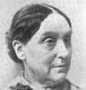Abigail Scott Duniway
-
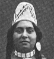Indian Woman of the Umatilla Tribe
-
 Mr. and Mrs. W. H. Gray
Mr. and Mrs. W. H. Gray -
 Mrs. C. M. Cartwright and grandson
Mrs. C. M. Cartwright and grandson -
 Miss Helen F. Spalding
Miss Helen F. Spalding -
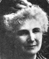Linda Bronson Salmon
-
 Frances Fuller Victor
Frances Fuller Victor -
 Eva Emery Dye
Eva Emery Dye -
 Narcissa White Kinney
Narcissa White Kinney -
 Song of Klootchman
Song of Klootchman -
 Mrs. Catherine A. Coburn
Mrs. Catherine A. Coburn -
 James Harrison and Lueza Douthit
James Harrison and Lueza Douthit -
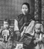Chinese Mother and Children
Search OCLC WorldCat for this title.
Search Google Books for this title.
Dowie, Ménie Muriel, ed., and C. J. Worthington . Women Adventurers. London: Unwin; New York: Macmillan, [1890?]; 1893.
In “Adventure Series.” Red cloth cover with image of knight on charger above a banner reading “Fisher Unwin. Paternoster Square. E. C./London 1890.” Frontispiece: “Harry T. Buford/ Madame Velazquez in Military Uniform.” Dowie, posing the weary old questions of women's equality or rights (v-x), wishes the women adventurers had not been “the narrators” of their own tales (they are too sentimental and judgmental [xii]). Dowie eschews documentation, both because she does not take “the ladies or their legends seriously enough” and because the legendary effect is stronger without it (xv-xvi). After the introduction, the volume becomes a bound set of reprints (each with frontis., titlepage, etc., but continuous pagination) of: The Woman in Battle: A Narrative . . . of Madame . . . Velazquez . . . , ed. C. J. Worthington (Hartford: Belknap, 1876); Anon., The Female Soldier, or The Surprising Life and Adventures of Hannah Snell (London: Walker, 1750), with signed affidavit dated 1750; The Life and Surprising Adventures of Mary Anne Talbot in the Name of John Taylor . . . Related by Herself (London: Kirby, 1809); The Life and Adventures of Mrs. Christian Davies Commonly Called Mother Ross (London: Montagu, 1740).
TOC: Madame Velazquez; Hannah Snell; Mary Anne Talbot; Mrs. Christian Davies or Mother Ross.
Search OCLC WorldCat for this title.
Search Google Books for this title.
Dunbar, Agnes Baillie Cuninghame. A Dictionary of Saintly Women. 2 vols. London: Bell, 1904-5.
Search OCLC WorldCat for this title.
Search Google Books for this title.